Основні поняття та принципи
комбінаторики
Методи знаходження різноманітних сполук, які можна одержати з множини деяких об'єктів, називають
комбінаторними. 1. Розміщення.
Дано
букви А, В та С. Як багато розміщень з трьох букв по три можна одержати?
Розміщення - це такі
комбінації, які відрізняються як порядком,
так і елементами. В нашому випадку - це АВС, АСВ, ВАС, ВСА,
САВ, СВА.
Зауважимо,
що 6 розміщень одержано простою перестановкою елементів.
 Розміщенням з п елементів по т називають
такі комбінації, які складаються з т елементів, взятих з
даних п елементів
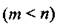
і відрізняються як порядком, так і елементами. Кількість розміщень з п елементів по т позначають
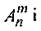
знаходять за формулою:
Розміщенням з п елементів по т називають
такі комбінації, які складаються з т елементів, взятих з
даних п елементів
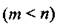
і відрізняються як порядком, так і елементами. Кількість розміщень з п елементів по т позначають
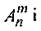
знаходять за формулою:
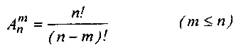
(6)
Зауваження. Вираз п! (читаємо п факторіал)
- це добуток послідовних цілих чисел від 1 до п. За означенням
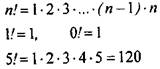
(7)
У
випадку трьох букв, знайдемо кількість розміщень із трьох букв по три. Маємо
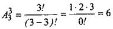
Якщо позначити
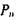
- кількість розміщень з п елементів по п, тоді ми одержимо сполуки, які називають
переставленням цих елементів. Тоді
 (8)
(8)
Приклад 3. Нехай
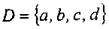
. Знайти кількість розміщень,
взятих з множини І) по 2
елементи.
Розв’язання За умовою п = 4 і т = 2, тому
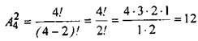
Приклад 4. Скількома способами можна
вибрати голову, віце-голову,
секретаря та казначея в комітеті з восьми членів?
Розв'язання. Проблема еквівалентна знаходженню кількості
розміщень з восьми різних елементів по чотири. Маємо
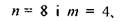
тому
кількість способів вибору чотирьох офіційних посад з восьми членів
визначаємо як
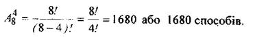
Завдання для самоперевірки. Скількома способами можна розташувати п'ять видів содової на
вітрині? Відповідь: 120.
Сполучення
Раніше
ми розглянули розміщення, як такі комбінації, що складаються
з елементів, що відрізняються як порядком, так і елементами.
В багатьох ситуаціях
особливий інтерес викликають комбінації, що
складаються з т об'єктів, взятих з даних п об'єктів і для яких неістотний порядок об'єктів. Такі
комбінації називають сполученнями.
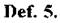
Сполученням
з п по т називають комбінації, що складаються з т елементів, взятих з даних п елементів і
які відрізняються хоч би одним елементом.
Якщо
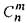
позначити
кількість сполучень з п елементів по т, тоді якщо
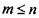
,
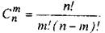
(9)
Приклад
5. Обчислити
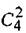
та
інтерпретувати результат.
Розв'язання.
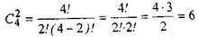
Одержимо 6 сполучень з чотирьох різних елементів взятих по два.
Для самоперевірки.
1. Скільки груп по п'ять студентів в кожній можна
утворити із семи студентів, якщо порядок студентів неістотний?
Відповідь: 21.
2.
Президент компанії має вибрати для розв'язання проблем, які
виникають, чотирьох з шести своїх віце-президентів. Скільки можна скласти варіантів
обрання необхідних керівників?
Відповідь: 15.
Приклад 6. Президент хімічної компанії віддає
перевагу регіону А для побудови хімічного підприємства. Семеро
з п'ятнадцяти членів ради директорів згодні з пропозицією
президента, але інші члени ради мають іншу думку про місце розташування
підприємства.
1.
Яка ймовірність, що п'ять членів
вибраного комітету підтримають пропозицію президента компанії?
2.
Яка ймовірність, що чотири із п'яти
членів комітету віддадуть перевагу регіону А?
Розв'язання.
1.
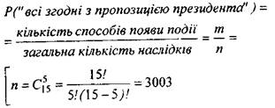
Існує 3003 можливості створити
комітет з п'яти членів, який обирається з 15 членів ради директорів (порядок вибору неістотний). Якщо всі п'ять вибрані із семи членів
ради, які згодні з пропозицією президента компанії, то
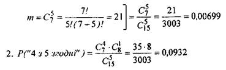
За умовою 7 членів ради згодні з пропозицією президента, тому кількість способів вибору 4 із 7 обчислюється
як
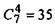
. Крім
того, існує
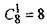
шляхів вибору 1 члена ради із 8, які не згодні з
пропозицією президента і 3003 загальних варіантів створення комітету
із 15 членів ради по 5.
Інтерпретація. Ймовірність вибору 4 із 5 членів ради, які згодні з пропозицією президента (0,0932) більша, ніж вибір
комітету, в якому всі згодні з президентом.